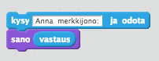
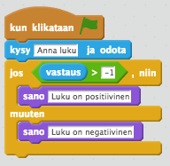
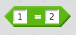
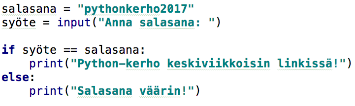
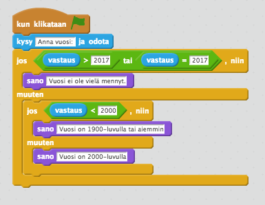
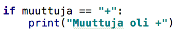

OTSIKKO
Merkkijonon kysyminen käyttäjältä ja sen tallentaminen muuttujaan
Nyt osaamme tulostaa muuttujan sekä tekstiä. Otetaan seuraavaksi Scratch-vertaus käyttäjältä merkkijonon kysymiseen. Seuraavassa ensin Scratch-koodi ja sitten Python-koodi jossa sanominen on muutettu tulostamiseksi. Testaa Python-esimerkkiä. 
vastaus = input("Anna merkkijono: ")
print(vastaus)
Luvun kysyminen käyttäjältä ja sen tallentaminen muuttujaan
Entä jos haluaisimme tehdä laskutoimituksen, jonka luvut riippuvat käyttäjästä? Haluaisimme siis, että käyttäjä voisi antaa kaksi lukua ja tietokone voisi laskea esimerkiksi niiden yhteenlaskun. Näin pääsisimme lähemmäksi osion lopullista tavoitettamme, laskimen koodaamista.Tehtävä 5: Tee esimerkin mukaan
Seuraava koodi kysyy käyttäjältä kaksi lukua, asettaa ne muuttujiin x ja y, sekä tulostaa niiden summan. Kirjoita koodi tekstieditoriin, aja se ja testaa ohjelmaa. Sen jälkeen jatka lukemista ja tee ohjeen mukaan.
x = int(input("Anna ensimmäinen luku: "))
y = int(input("Anna toinen luku: "))
summa = x + y
print(summa)
Ylläoleva koodi näyttää monimutkaiselta siksi, että se kysyy lukuja eikä tekstiä. Koodi
x = int(input("Anna ensimmäinen luku: ")) kysyy siis lukua ja tallentaa sen muuttujaan x, siinä missä koodi
x = input("Anna ensimmäinen luku: ") kysyisi merkkijonoa ja tallentaisi sen muuttujaan x.
Poista nyt lukujen kysymisistä int( ) -ympärykset siten että koodisi näyttää sen jälkeen tältä:
x = input("Anna ensimmäinen luku: ")
y = input("Anna toinen luku: ")
summa = x + y
print(summa)
Testaa ohjelmaa. Mitä tulokselle käy, onko tulos oikein? Mistä arvelet sen johtuvan?
Vastaus on, että int( ) -koodilla ympäröity käyttäjältä luvun kysyminen kohtelee kysyttyä lukua lukuna, kun taas ilman
int( ) -ympäryksiä oleva input-käsky kohtelee kysyttyä lukua merkkijonona. int() -komento muuttaa merkkijonon luvuksi. Ensimmäisessä esimerkissä siis lukujen yhteenlasku lasketaan oikein,
toisessa esimerkissä vain yhdistetään kysytyt luvut niin että esimerkiksi luvuista 1 ja 2 tulisi tulokseksi "12".
Tehtävä 6: Tulosta käyttäjältä kysyttyjen lukujen osamäärä
Tee ohjelma, joka kysyy käyttäjältä kaksi lukua ja tulostaa niiden osamäärän. Kahden luvun jakolasku tehdään Pythonissa / -merkillä.Ehdollisuus
Ehdollisuus tarkoittaa sitä, että ohjelmassa seuraavaksi suoritettavat käskyt riippuvat ohjelmoijan antamista ehdoista. Seuraavista Python-esimerkeistä lähtien mukana on sisennyksiä koodissa. Sisennys siis tarkoittaa sitä, että seuraava koodirivi alkaa sisempää kuin edellinen. Pythonissa sisennykset on erittäin tärkeitä tehdä oikein esimerkkien mukaan, muuten koodin ajaminen ei onnistu. Sisennykset ovat ensimmäinen merkittävä Scratchin Pythonista erottava tekijä. Yhtä sisennettyä koodialuetta kutsutaan lohkoksi . Lohko-sanaa tullaan käyttämään myöhemmin.Esimerkki ehdollisuudesta: Onko luku positiivinen
Otetaan esimerkiksi ohjelma, joka kysyy käyttäjältä lukua ja kertoo, onko luku positiivinen vai negatiivinen. Tässä esimerkissä 0 lasketaan mukaan positiiviseksi luvuksi. 
luku = int(input("Anna luku: "))
if luku > -1:
print("Luku on positiivinen")
else:
print("Luku on negatiivinen")
Ohjelma siis toimii niin, että ensin kysytään käyttäjältä lukua ja tallennetaan se muuttujaan luku . Tämän jälkeen jos luku on suurempi kuin -1, tulostetaan
"Luku on positiivinen" (if). Jos luku ei ole suurempaa kuin -1 eli on -1 tai pienempi kuin se, tulostetaan "Luku on negatiivinen" (else).
Huom! Else -lohko ei ole pakollinen. Mikäli ylläolevasta esimerkistä poistettaisiin else-lohko sisältöineen, ohjelma tulostaisi "Luku on positiivinen" jos luku on positiivinen, mutta jos luku on negatiivinen niin se ei tulostaisi mitään.
Paritehtävä 7: Vuositarkistus
Paritehtävä tarkoittaa sitä, että teet tehtävän parin kanssa. Jos et löydä vierestäsi paria niin kerro siis ohjaajalle että
tarvitset parin. Pari tekee toisen version saman asian toteuttavasta ohjelmasta Scratchilla ja toisen version Pythonilla.
Lopuksi pari testaa että ohjelma toimii ja näyttää sen ohjaajalle.
Tee ohjelma, joka kysyy käyttäjältä vuoden. Mikäli vuosi on jo mennyt (eli on pienempi kuin 2017), tulostetaan (Scratchissa hahmo sanoo) "Vuosi meni jo!", muuten tulostetaan: "Vuosi ei ole vielä mennyt.".
Käytä kopioimaasi luvun positiivisuuden/negatiivisuuden ilmoittavaa esimerkkiä pohjana.
Suuruuden vertailuoperaattorit
Edellisessä tehtävässä käytettiin if-lauseessa pienempi kuin -operaattoria. Seuraavassa taulukossa kaikki vertailuoperaattorit ja niiden merkitykset. Huomaa että Pythonissa "pienempi tai yhtä suuri kuin" sekä "suurempi tai yhtä suuri kuin" toteutetaan yhdellä operaattorilla, kun Scratchissa tarvitaan "tai" väliin.| operaattori | merkitys | esimerkki | sama esimerkki Scratchilla |
|---|---|---|---|
| < | pienempi kuin | 1 < 2 | |
| > | suurempi kuin | 1 > 2 | |
| == | yhtä suuri kuin | 1 == 2 |  |
| <= | pienempi tai yhtä suuri kuin | 1 <= 2 | |
| >= | suurempi tai yhtä suuri kuin | 1 >= 2 |
Esimerkki ehdollisuudesta: Salasana
Seuraava esimerkkikoodi kysyy käyttäjältä syötettä merkkijonona . Mikäli syöte on sama kuin salasanamme "pythonkerho2017", paljastetaan salainen tieto kerhon ajankohdasta. Mikäli käyttäjän antama salasana on väärin, tulostetaan "Salasana väärin!". Monta else -lohkoa
Edellisessä tehtävässä ohjelma tarkisti, onko käyttäjän antama vuosi mennyt vai ei. Nyt haluamme tehdä tarkempaa analyysiä, kuinka kaukana menneisyydessä annettu vuosiluku on. Seuraavassa esimerkissä kerrotaan, onko vuosi mennyt, 2000-luvulla vai 1900-luvulla tai aiemmin. Kopioi esimerkki ja kokeile sitä.
luku = int(input('Anna vuosi: '))
if luku >= 2017:
print('Vuosi ei ole vielä mennyt.')
elif luku < 2000:
print('Vuosi on 1900-luvulla tai aiemmin')
else:
print('Vuosi on 2000-luvulla')
Sitten saman asian tekevä esimerkki Scratchilla:

Huomataan että saman asian toteuttaminen on monimutkaisempaa Scratchilla. Scratchissa tarvitaan kaksi jos - muuten -rakennetta
joista toinen menee toisen muuten -lohkoon. Pythonissa saman asian ajaa elif . Elif tarkoittaa else if
eli jos muuten.
Tehtävä 8: Huomioidaan jos luku on nolla
Palaa katsomaan Onko luku positiivinen -esimerkkiä. Tehtävänäsi on toteuttaa ohjelma, joka kysyy käyttäjältä lukua, ja tulostaa "Luku on nolla", jos luku on 0, "Luku on positiivinen", jos luku on suurempi kuin nolla, ja "Luku on negatiivinen" jos luku on pienempi kuin nolla.Laskin
Seuraava projekti on tehdä laskin, joka ottaa syötteinä kaksi lukua ja laskutoimituksen. Ohjelman tulee laskea näille luvuille käyttäjän antama laskutoimitus ja tulostaa lopputulos. Ohjelma tehdään kahdessa osassa seuraavissa tehtävissä.Tehtävä 9: Laskin osa 1
Laskinohjelman alussa tulee kysyä käyttäjältä kaksi lukua, tallentaa ne muuttujiin, sekä kysyä laskutoimitus merkkijonona ja tallentaa se muuttujaan. Lukujen ja laskutoimituksen tulee näyttää seuraavalta ohjelmaa suoritettaessa:
Huomioi, että luku kysytään käyttäjältä eri tavalla kuin merkkijono.
Tehtävä 9: Laskin osa 2
Nyt meillä on muuttujiin tallennettuina kaksi lukua lukuina sekä laskutoimitus merkkijonona . Seuraavaksi tarvitsemme ehdollisuutta, tavoitteena tunnistaa eri laskutoimitukset ja laskea lopputulos tunnistetun laskutoimituksen perusteella. Vinkkinä kannattaa katsoa kohtaa "Monta else -lohkoa" sekä seuraavaa kuvaa: Sinun täytyy siis toteuttaa ehdollisuus tunnistamaan eri laskutoimitukset, ja tulostaa laskutoimituksen lopputulos jokaisessa lohkossa erikseen, riippuen laskutoimituksesta. Testaa että ohjelmasi toimii seuraavanlaisesti (jokaisella laskutoimituksella oikea tulos)

Totuusarvot
Muuttuja voi olla merkkijonon ja luvun lisäksi myös totuusarvo. Totuusarvoja ovat True eli tosi ja False eli epätosi. Totuusarvoja itse asiassa käytetään jokaisessa if-lauseessa. Jokainen if-ehto saa koodia suoritettaessa totuusarvon sen perusteella onko ehto tosi vai ei, ja sen perusteella ohjelman suorituksessa päätellään siirrytäänkö ehdon sisällä olevaan lohkoon vai ei. Esimerkiksi ehto if 1 == 1 on aina tosi.
Muuttujaan voi sijoittaa totuusarvon seuraavilla tavoilla:
tosimuuttuja = True
epätosimuuttuja = False
Muuttujaan voi sijoittaa totuusarvon myös ehtona. Esimerkiksi seuraavan koodin tulostukseksi tulee True.
totuusarvo = 1 < 2 print(totuusarvo) Loogiset operaattorit
Loogisilla operaattoreilla voidaan yhdistää monta ehtoa eri logiikoilla tai laskea totuusarvon negaatio. Negaatio tarkoittaa päinvastaista totuusarvoa kuin totuusarvo josta negaatio otetaan. Negaation voi laskea seuraavalla tavalla esimerkiksi muuttujasta nimeltään totuusarvo:
negaatio = not totuusarvo
Muita tällä kurssilla käsiteltäviä totuusarvoja ovat and ja or . Or-operaattorilla yhdistettävät totuusarvot ovat yhteensä tosi jos jompikumpi yhdistettävistä totuusarvoista on tosi.
And-operaattorilla yhdistettävät totuusarvot ovat tosi jos molemmat yhdistettävät totuusarvot ovat tosi.
| operaattori | merkitys | vastine Scratchissa |
|---|---|---|
| and | Yhdistää kaksi totuusarvoa, tosi jos molemmat ovat tosi. | |
| or | Yhdistää kaksi totuusarvoa, tosi jos jompikumpi tai molemmat ovat tosi. | |
| not | Negaatio totuusarvosta eli päinvastainen totuusarvo |
ikä = int(input("Anna ikäsi: "))
if ikä >= 7 and ikä <= 16: print("Tarvitset lastenlipun") else: print("Olet aikuinen tai niin pieni lapsi että voit matkustaa ilmaiseksi") Paritehtävä 10: Alaikäinen
Paritehtävä tarkoittaa sitä, että teet tehtävän parin kanssa. Jos et löydä vierestäsi paria niin kerro siis ohjaajalle että
tarvitset parin. Pari tekee toisen version saman asian toteuttavasta ohjelmasta Scratchilla ja toisen version Pythonilla.
Lopuksi pari testaa että ohjelma toimii ja näyttää sen ohjaajalle.
Tee ohjelma, joka kysyy käyttäjältä iän ja kertoo (Pythonissa tulostaen, Scratchissa hahmo sanoo), onko käyttäjä alaikäinen, eli hänen ikänsä on vähintään 0 mutta alle 18.
Paritehtävä 11: Sekunnit vuodessa
Tee ohjelma, joka laskee, kuinka monta sekuntia on vuodessa. Voit olettaa, että vuodessa on 365 päivää (eli ei ole karkausvuosi). Tulosta lopputulos (Scratchissa hahmo sanoo).Lisätehtävä: Parillinen vai pariton?
Tee ohjelma, joka kysyy käyttäjältä luvun ja ilmoittaa, onko se parillinen vai pariton. Vihje: Luvun jakojäännös 2:lla kertoo, onko luku parillinen vai pariton. Jakojäännos taas saadaan %-operaattorilla. Esimerkiksi luvun 5 jakojäännöksen 2:lla saa näin:
jakojäännös = 5 % 2
Lisätehtävä: Arvosanat ja pisteet
Tee ohjelma, joka ilmoittaa kurssiarvosanan seuraavan taulukon mukaisesti:| pistemäärä | arvosana |
|---|---|
| 0–29 | hylätty |
| 30–34 | 1 |
| 35–39 | 2 |
| 40–44 | 3 |
| 45–49 | 4 |
| 50–60 | 5 |
Esimerkkitulostuksia:
Anna pisteet [0-60]: 37
2
Anna pisteet [0-60]: 51
5
Lisätehtävä: Luvut suuruusjärjestyksessä
Tee ohjelma, joka kysyy käyttäjältä kolme lukua ja tulostaa ne suuruusjärjestyksessä.
Anna ensimmäinen luku: 8
Anna toinen luku: 1
Anna kolmas luku: 3
1
3
8
Toimiihan ohjelmasi myös, jos käyttäjä antaa monta kertaa saman luvun?
Lisätehtävä: Karkausvuosi
Vuosi on karkausvuosi, jos se on jaollinen 4:llä. Kuitenkin jos vuosi on jaollinen 100:lla, se on karkausvuosi vain silloin, kun se on jaollinen myös 400:lla.
Tee ohjelma, joka tarkistaa, onko vuosi karkausvuosi.
Anna vuosi: 2011
Vuosi ei ole karkausvuosi.
Anna vuosi: 2012
Vuosi on karkausvuosi.